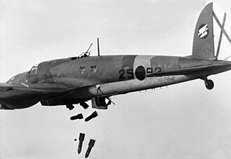
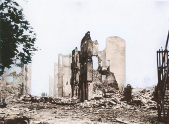

Part IV · Deals & War · Chapter 10
Inherits: The Great Depression (ch. 9) · Feeds: Munich → Pact → September 1939 (ch. 11)
Spain, 1936–1939: The Bombers and the Bill
“Guernica had no anti-aircraft guns; there were no guns in the town at all, not even a machine gun was to be found.”
DE · Padre Alberto de Onaindía, eyewitness account printed in a full column in bpb Nr. 316 (2012), p. 8That is a priest taking an inventory of what his town did not have. Guernica is a Basque town of a few thousand people about thirty kilometres east of Bilbao; the aircraft came over the centre in the late afternoon of 26 April 1937, a Monday and market day, and kept coming in waves for something over three hours. The last chapter ended with recovery arriving through military spending; Spain is where some of that money became aircraft, credit and practice. Every classroom that teaches this war calls what arrived by the same name: help. Half of them print the name of the town it fell on. Not one prints a price.

Six classrooms use one word for what Germany, Italy and the Soviet Union sent to Spain. How much does that word cover?
1 What happened
- February 1936: a Popular Front coalition wins the Spanish general election. On 17–18 July 1936 a section of the army rises against the government, beginning in Spanish Morocco and spreading to the mainland.
- From late July 1936, German Junkers Ju 52 and Italian Savoia-Marchetti transports carry the Army of Africa across the Strait of Gibraltar to southern Spain.
- The Non-Intervention Agreement is proposed by France in August 1936; a Non-Intervention Committee begins meeting in London on 9 September 1936. Germany, Italy and the USSR adhere to it and all three supply the war.
- The Condor Legion, a German air unit under Spanish nominal command, operates in Spain from November 1936 to 1939; around 19,000 German personnel pass through it in rotation. Italy’s Corpo Truppe Volontarie peaks at roughly 50,000 men.
- Roughly 35,000–40,000 foreign volunteers from more than fifty countries serve in the International Brigades, recruited largely through the Comintern; they are withdrawn in the autumn of 1938.
- 26 April 1937: Guernica is bombed. Death tolls have been contested since the week it happened — the Basque government said 1,654; later research, including Hugh Thomas’s, gives figures in the low hundreds.
- Madrid surrenders on 28 March 1939; Franco announces the end of the war on 1 April 1939 and governs Spain until his death on 20 November 1975. Total dead are usually given as around half a million, including deaths from repression after the fighting stopped; the composition of that figure is still argued about. Nobody disputes that both sides killed prisoners.
2 The word
Here are the six, ordered by how much of the act gets a name. The checklist is the same in every row — the aircraft (or whatever it is that arrives), the target, the unit that flew, the date, and the voice that authorised it — and the ladder climbs from a classroom in which nothing is dropped on anything to one that supplies all five and then quotes the man who signed the order. Sort by a different criterion and the order moves; hold that thought until Italy. Ukraine’s volume begins in 1945 and China’s is a national history; they are in the receipts, along with the two books that could have taught this war and carry nothing. Kazakhstan’s book is national history and is never a world-event column here.
| Classroom | What the foreign aircraft did | Named: aircraft · target · unit · date · sender |
|---|---|---|
| BY · Кошелев 2021 |
«В июле 1936 г. часть испанской армии во главе с Франко подняла мятеж против правительства республиканской Испании, которое мятежники считали чрезмерно левым и антикатолическим. В гражданской войне в Испании Италия и Германия помогали националистам (так называли себя сторонники Ф. Франко), а СССР поддерживал республиканцев.» “In July 1936 part of the Spanish army led by Franco raised a rebellion against the government of republican Spain, which the rebels considered excessively left-wing and anti-Catholic. In the civil war in Spain Italy and Germany helped the nationalists (as the supporters of F. Franco called themselves), while the USSR supported the republicans.” |
aircraft — · target — · unit — · date — · sender — Two verbs, no cargo |
| RU · Чубарьян 2023 |
«Франция, Великобритания, США и другие страны провозгласили „политику невмешательства“. Гитлеровская Германия и фашистская Италия поддерживали мятежников ударами с воздуха, поставками вооружений и боеприпасов. На стороне мятежников действовал 125-тысячный итальянский экспедиционный корпус.» “France, Great Britain, the USA and other countries proclaimed a ‘policy of non-intervention.’ Hitlerite Germany and fascist Italy supported the rebels with strikes from the air, deliveries of armaments and ammunition. On the side of the rebels there operated a 125-thousand-strong Italian expeditionary corps.” |
aircraft ✓ · target — · unit — · date — · sender — Strikes from the air; the town is a museum label |
| IT · Sabbatucci–Vidotto 2004 |
«Meno rilevante quantitativamente, ma ugualmente prezioso, fu l’aiuto della Germania nazista, che inviò soprattutto aerei e piloti e si servì della guerra per sperimentare l’efficienza della sua aviazione.» “Less significant quantitatively, but equally precious, was the aid of Nazi Germany, which sent above all aircraft and pilots and made use of the war to test the efficiency of its air force.” |
aircraft ✓ · target — · unit — · date — · sender — (purpose ✓) The practice named, the place not |
| US · OpenStax 2022 |
“Though it is debatable how militarily effective the German and Italian bombing of civilian targets like Madrid and Guernica was, it did cause people to shudder at the increased horror of warfare.” |
aircraft ✓ · target ✓ · unit — · date — · sender — Two cities, one hedge |
| UK · Lowe 2013 |
“Mussolini provided 70 000 troops and Hitler sent tanks and allowed his air force to practice bombing undefended civilian targets. The most notorious of these attacks took place in April 1937 when around a hundred bombers of the German Condor Legion destroyed the defenceless Basque market town of Guernica, killing 1600 people.” |
aircraft ✓ · target ✓ · unit ✓ · date ✓ · sender ✓ (“allowed”) A unit, a town, a number |
| DE · bpb Nr. 316, 2012 |
«Zusammen mit Italien lieferte Deutschland trotz internationaler Absprachen, Neutralität zu wahren, Rüstungsgüter nach Spanien und entsandte sogar heimlich die „Legion Condor“. Der spanische Bürgerkrieg sollte zum Versuchsfeld der eigenen Kriegsführung werden, die sich, wie im Falle des verheerenden Angriffs auf die baskische Stadt Guernica im April 1937, auch gegen die Zivilbevölkerung richtete.» “Together with Italy, Germany delivered armaments to Spain despite international agreements to preserve neutrality, and even secretly dispatched the ‘Condor Legion.’ The Spanish Civil War was to become a testing field for Germany’s own conduct of war, which — as in the case of the devastating attack on the Basque town of Guernica in April 1937 — was directed at the civilian population as well.” |
aircraft ✓ · target ✓ · unit ✓ · date ✓ · sender ✓ (under oath) The sender, quoted at Nuremberg |
3 What the word will not name
Every one of the six says that German and Italian help reached Franco’s side, and none of them disputes it. What separates them is whether that help ever acquires an aircraft, a target, a unit, a date and a voice that authorised it.
The first two rows keep everything in the air. Koshelev’s war is two verbs in one sentence — Italy and Germany helped the nationalists, the USSR supported the republicans — and the symmetry is the point: two aids, matched, neither of them carrying a cargo, and neither of them bought. The rebellion is raised by “part of the Spanish army,” the rebels explain themselves in the same clause as men who considered the government “excessively left-wing and anti-Catholic,” and what the Spanish war finally produces in this book is not a Spanish outcome at all: Hitler and Mussolini, «видя фактический отказ демократических государств помогать испанскому правительству» — “seeing the factual refusal of democratic states to help the Spanish government” — form the Berlin–Rome Axis. The only picture is the victory parade. Chubaryan puts the aircraft up and never lands them: Germany and Italy support the rebels «ударами с воздуха», with strikes from the air, and then comes an Italian corps, Guadalajara, the Ebro — a real military narrative with no room for a target. Search the whole volume for Герника and there are two hits: a photo credit, and a caption on an unnumbered colour plate at the back, filed a hundred and twenty pages later among Cézanne, Mondrian and Dalí. In this classroom Guernica is a museum address.
Then the pair that complicates the ladder, because each supplies exactly what the other withholds. Sabbatucci and Vidotto write the sharpest available sentence on what the foreign air forces were doing — Germany “sent above all aircraft and pilots and made use of the war to test the efficiency of its air force” — and close the section by recording that Spain is where “the bombing of inhabited centres, reprisals, round-ups” were adopted “for the first time.” The method, the purpose and the precedent are all named. The place is not: Guernica, Gernika and Legion Condor do not occur anywhere in a manual of some seven hundred and fifty pages, and Italy is one of the two countries whose air forces were flying. OpenStax has the opposite problem. It prints the town and doubts the sentence it is in — “Though it is debatable how militarily effective the German and Italian bombing of civilian targets like Madrid and Guernica was, it did cause people to shudder at the increased horror of warfare” — where the bombing is a noun, its subject is a compound adjective, and the main clause is about a shudder. One book gives the intention without the place; the other gives the place without anybody doing anything in it.
The last two rungs put all five components on the page. Lowe does it in a single sentence — a hundred bombers, the German Condor Legion, the Basque market town, 1600 people — and adds the clause that explains what an air force was doing over a market: Hitler “allowed his air force to practice bombing undefended civilian targets.” That verb is the whole rehearsal thesis, in a school textbook, in passing. The German booklet treats the raid as a thing somebody decided to do: the delivery is made “despite international agreements to preserve neutrality,” the Condor Legion is dispatched “secretly,” the war “was to become a testing field.” Then the page splits in two under a pair of headings that do this chapter’s work in seven words — „Proben“ für die einen … Ernstfall für die anderen, “‘Trials’ for the one side … the real thing for the other.” The left column is Göring at Nuremberg explaining that he rotated crews through Spain so the personnel would gain experience. The right column is the priest counting waves of Junkers and, afterwards, the diameter of the craters. Perpetrator and witness, printed side by side, sourced, at school-textbook length.
And the moment both of them name the town, they disagree about it by an order of magnitude. Lowe’s raid kills “1600 people.” The German booklet says „mehrere Hundert“, several hundred. The higher figure is the one the Basque government issued in 1937 — 1,654 — and it has been argued over ever since; the lower figures come from later archival work, including by the historian Lowe cites elsewhere in the same section. Two textbooks, one afternoon, an order of magnitude apart, and neither tells a student the number is disputed. The two books that name the target best are also the two that let a reader discover, by reading both, that naming a thing is not the same as agreeing about it.
Line the six up and the order does not track guilt, or distance, or ideology. The two states whose aircraft flew sit at opposite ends: Germany prints the town eleven times in an eighty-four-page booklet, and Italy prints it zero times. The two books furthest from Spain in every direction — Minsk and Moscow — are the two that keep the aeroplanes permanently airborne. Re-sort the ladder by agency instead of by proper nouns and one column moves: Italy jumps two rungs, because “made use of the war to test the efficiency of its air force” is a thicker sentence about intention than anything OpenStax or Lowe writes. The same book will not let its own state off elsewhere either — Mussolini’s 50,000 «volontari» (ma si trattava in realtà di reparti regolari), “‘volunteers’ (but in reality they were regular units),” a textbook dismantling its own government’s euphemism inside a parenthesis. Italy will tell you exactly what the intervention was for, and exactly what it was called at home. It will not tell you where it landed.
One last thing the naming does, outside the Spanish pages entirely. The two books that name Guernica best both reach for it again later, in the argument about the Allied bombing of German cities, and they reach for it from opposite sides of the same ledger. Lowe quotes a peace campaigner conceding the raids “probably were war crimes, but that the Nazis themselves were the first to begin bombing innocent civilians in Guernica (during the Spanish Civil War), Warsaw and Rotterdam.” The German booklet, describing the destruction of German cities from 1942, writes that this happened «ebenso wie deutsche Luftangriffe zuvor Städte wie Guernica, Coventry, Warschau, Belgrad, Leningrad, Minsk und Rotterdam zerstört hatten» — “just as German air raids had earlier destroyed cities like Guernica, Coventry, Warsaw, Belgrade, Leningrad, Minsk and Rotterdam.” One classroom uses the town to answer a charge; the other uses it to accept one. Both put it first in the list. A place-name that three of these books manage without turns out, in the two that keep it, to be load-bearing a whole war later.
4 Credit where due
Fairness · one award, two footnotes
bpb (DE) takes it, and takes it the hard way. This is a booklet published by a German federal agency, about German history, and it builds its Spain pages out of the two documents a national narrator has the most reason to leave out: the commander-in-chief of its own air force telling a war-crimes tribunal what he was testing, and a foreign priest describing what that was like from underneath — at equal column width, both sourced. Note also the sentence it declines to write. It does not say the Spanish war caused anything. It says the war was used, „militärische Generalprobe“, a military dress rehearsal, which is a claim about intent and equipment and not a claim that Guernica made 1939 happen. Two footnotes beside it. Sabbatucci–Vidotto (IT) corrects its own state’s euphemisms in its own parentheses — “volunteers” to regular units, and Guadalajara reported as Italians beating Italians: «gli italiani della Brigata Garibaldi inflissero una dura sconfitta ai loro connazionali inquadrati nei reparti fascisti», “the Italians of the Garibaldi Brigade inflicted a harsh defeat on their compatriots enrolled in the fascist units.” And Чубарьян (RU), in a 2023 state-approved volume, prints the sentence about the Soviet-aligned side that it did not have to print: «Тыл республиканской Испании был охвачен своего рода второй гражданской войной, где коммунисты боролись против анархистов, троцкистов, а порой и против социалистов» — “the rear of republican Spain was engulfed by a kind of second civil war, where the communists fought against anarchists, Trotskyists, and at times against socialists.”
5 Where this stops being true
Limits
This ladder is six pinned editions, not six countries and not “the world.” Ukraine’s volume covers 1945–2018 and China’s is a national history of China; those zeros are syllabus boundaries. Two in-scope books carry nothing — Sudan’s ministry secondary history and India’s NCERT Themes in World History — and both have ordinary explanations: the Sudanese volume’s interwar chapters are about the Gezira scheme and the Graduates’ Congress, and the rationalised NCERT volume runs from antiquity to the modernisation of Japan and China without an interwar-Europe unit at all. By this book’s own rule of thumb — a zero counts as an avoidance signal only when most of the eleven cover a topic — six of eleven sits at the edge of the threshold and does not clear it, so no avoidance is claimed here in either direction. Kazakhstan is not a column here; its book is national history.
The disputed Guernica toll above is not the only number these books cannot reconcile, and the pattern in the others is worth a reader’s suspicion. Set the Italian troop counts side by side on the same three pages of the same three books: Russia’s 125,000, Britain’s 70,000, Italy’s own 50,000. The last of those is the smallest, and it is the one printed in Rome.
Finally, none of these six books is a history of Spain. Not one of them tells the war from inside the Republic’s own institutions or the Church’s, and the deaths behind the lines — the priests and nuns killed in republican territory, the tens of thousands shot in nationalist territory during and after the war — are a Hugh Thomas tally in one column, a clause in two, and absent from three. If you want to know what happened in a particular Spanish village between 1936 and 1943, every column here will leave you unsatisfied.
6 Receipts
- DE — Bundeszentrale für politische Bildung, Nationalsozialismus: Krieg und Holocaust, Informationen zur politischen Bildung Nr. 316 (2012): Hitler’s decision during the Berlin Olympics, the Condor Legion and the “testing field,” p. 7; the double box „Proben“ für die einen … Ernstfall für die anderen — Göring’s Nuremberg testimony (from H.-C. Kirsch, ed., Der spanische Bürgerkrieg in Augenzeugenberichten, Karl Rauch Verlag 1971, pp. 101 f. and 268 ff.) and Padre Alberto de Onaindía’s account, p. 8; the “military dress rehearsal” caption and the UN copy of Picasso’s painting, p. 8; Guernica heading the list of cities destroyed by German raids, p. 4. 11 mentions Guernica (plus one “Gernika”) — the most in the corpus, in an eighty-four-page booklet.
- UK — Norman Lowe, Mastering Modern World History, 5th ed. (Palgrave Macmillan 2013): § 15.3 “Spain,” pp. 342–347 — the revolt in Morocco and “The civil war had begun,” p. 345; Hugh Thomas’s 75,000 / 55,000 and the half-million total, p. 345; Condor Legion and Guernica, p. 345; the neutrality undertaking, p. 345; Mussolini’s transport aircraft as “probably decisive,” p. 346; 150,000 executed 1939–43 and the title Caudillo, p. 346. Guernica also at p. 77 (Hitler’s foreign policy) and in § 6.5(b) on Allied bombing of German cities . Index: “Guernica 77, 345.” 0 mentions “non-intervention” applied to Spain — the term appears three times in the book, all about US policy in Latin America; for Spain, France and Britain “refused to intervene.”
- US — OpenStax, World History, Volume 2: from 1400 (2022): § 12.2, p. 496 — the 1936 coup and the Nationalists; Guernica and Madrid; the policy of nonintervention and League inaction; “as many as 500,000 casualties”; the Jewish-Bolshevik-Masonic conspiracy claim; Figure 12.13, a mural in the modern town reproducing Picasso’s painting, captioned with the mural’s demand that Madrid return the original. 0 mentions International Brigades · foreign volunteers · Condor Legion · Morocco (in connection with Spain) — stems searched: International Brigade, volunteer, Condor, Lincoln, Morocco.
- IT — G. Sabbatucci & V. Vidotto, Il mondo contemporaneo (Laterza 2004): § 18.10 “La guerra civile in Spagna,” pp. 412–415 — democracy against fascism, p. 412; the junta of five generals, the colonial troops in Spanish Morocco, the landowners’ “over 40% of the cultivated lands,” the anarcho-syndicalist union and the risings of ’32 and ’34, pp. 412–413; Mussolini’s 50,000 “volunteers” and German aircraft and pilots, p. 413; the non-intervention agreement “respected only by France and Great Britain,” p. 414; the USSR, the Comintern and the International Brigades with Hemingway, Malraux and Orwell, p. 414; Guadalajara and the Garibaldi Brigade, p. 414; the POUM “liquidated also with the intervention of Soviet agents,” p. 414; about 500,000 dead and 300,000 political emigrants, p. 415; the bombing of inhabited centres “for the first time,” p. 415; further reading incl. Hugh Thomas, p. 422. 0 mentions Guernica · Gernika · Legion Condor — anywhere in the manual.
- RU — А. О. Чубарьян, Всеобщая история. Новейшая история 1914–1945 гг., 10 кл. (Просвещение 2023): § 12 “Борьба с фашизмом. Народный фронт во Франции,” section 2 “Народный фронт и гражданская война в Испании,” pp. 101–104 — the republic of December 1931, p. 101; the rising of 17 July 1936, the international brigades, the “policy of non-intervention,” the 125,000-strong Italian corps, Guadalajara and the Ebro, p. 102; the Comintern, the Popular Front as «борьба компартии за оттеснение политических соперников» and the “second civil war” in the rear, the war ending “as a struggle between two Spanish authoritarian regimes,” “Spanish fascism was not accepted by the Spanish people,” and “from 0.5 to 2 million political prisoners,” p. 103; Francoism, the Blue Division and 1975, p. 104; chronology entry «1936—1939 — Народный фронт и гражданская война в Испании», p. 219. 0 mentions Герника as an event · Легион «Кондор» — the two occurrences of «Герника» in the volume are a photo credit and a colour-plate caption for the Picasso painting.
- BY — В. С. Кошелев и др., Всемирная история, 11 кл. (БГУ 2021): Franco’s government established “as a result of a military mutiny and the civil war of 1936—1939,” p. 127; Italy intervening “on the side of General Franco’s mutineers,” p. 128; the victory-parade photograph, p. 130; “the Francoists led by F. Franco won,” p. 131; Spain and the intelligentsia in the culture chapter, p. 145; the July 1936 rising, Italian and German aid to the nationalists, Soviet aid to the republicans and the Berlin–Rome Axis, p. 149. 0 mentions Герника · Кондор · интернациональные бригады · невмешательство — stems searched: Испан-, Франко, франкист-, Герник-, Кондор, бригад-, невмешатель-, доброволь-.
- The word volunteer, six ways. A reliable instrument: the scare quotes go on the other side’s people — except in Italy, where they go on Italy’s own (above). Russia’s are «интернациональные бригады добровольцев из разных стран (в том числе из Франции, Великобритании, США и др.)», “international brigades of volunteers from various countries (including from France, Great Britain, the USA, etc.)”; the list of countries does not include the USSR, which appears one sentence earlier not as volunteers but as a government that “supported” the Popular Front. Lowe’s 40,000 volunteers from over fifty nations arrive with a handler attached: they “were organized and deployed by the Russians, working from a base in Paris.” OpenStax has no volunteers at all — the roughly 2,800 Americans who went to Spain are not in the American textbook. And Russia narrates Guadalajara with the Italian corps as the object and “the republican army” as the subject: same field, same month, one book counting Italians on both sides and the other counting one.
- Kept verbatim because errors are data. Lowe prints “Generals Mola and Sanjurjos” for the two conspirators — the second is José Sanjurjo, without the s — and calls the Falange leader “José Antonio de Rivera (Primo’s son),” splitting a compound surname so that the family name reads as de Rivera rather than Primo de Rivera. Belarus mentions the war’s foreign volunteers only in its culture chapter, where “the civil war in Spain caused the strengthening of the political influence of the intelligentsia throughout the world” and “in the late 1930s J. Steinbeck, E. Hemingway, L. Aragon became front-line correspondents and took part in military actions”; Hemingway and Aragon were in Spain, while Steinbeck was writing The Grapes of Wrath and became a war correspondent in 1943. None of these wobbles changes an argument. All are worth a second look on the printed page.
- 0 in-scope SD — وزارة التربية والتعليم, التاريخ للصف الثالث (Khartoum 2009): Spain appears only as an early-modern Mediterranean and colonial power and as France’s partner in the Rif war in Morocco. Stems searched: إسبان-, أسبان-, اسبان-, الحرب الأهلية, فرانكو, فرنكو, غيرنيكا, الكتائب الدولية; English extract checked in parallel (Spanish Civil, civil war in Spain, Franco, Guernica, International Brigade, Condor, Falange).
- 0 in-scope IN — NCERT, Themes in World History, Class XI (post-2022 rationalized): Spain appears as an early-modern empire and in reconquista geography; the volume has no interwar-Europe unit. Stems searched (English original): Spanish Civil, civil war in Spain, Franco, Guernica, International Brigade, Condor, Falange, Popular Front.
- 0 out-of-scope UA — Гісем/Мартинюк, Всесвітня історія, 11 кл. (2019), syllabus 1945–2018: Franco appears only through the transition to democracy after 1975 and the Basque question. Stems searched: громадянськ Іспан, Іспанськ громадян, Гернік-, Герник-, Франко, інтернаціональн бригад, Кондор. · CN — 中外历史纲要 上 (2019), national history, antiquity–2017: Spain appears as an early-modern colonial power. Stems searched: 西班牙内战, 佛朗哥, 格尔尼卡, 国际纵队, 西班牙. · KZ — national history; not a world-history column in this book.
- The count. In the corpus: six of eleven classrooms teach this war (BY, DE, IT, RU, UK, US); six of six call what arrived aid, help or support; three name Guernica (DE, UK, US). 0 of 6 say what that aid cost, who paid it, or in what. 0 of 11 mention the Bank of Spain’s reserve at all — stems searched: Bank of Spain, Banco de España, банк Испании, золото Испании, oro, gold reserve, bullion.
- 0 of 11 the Non-Intervention Committee — the London body that administered the policy four of these books name is not named by any of them.
- Outside the corpus. The gold: the Negrín decree of 13 September 1936 authorising removal of the reserve; the Banco de España’s own published historical accounts of the transfer; Ángel Viñas, El oro de Moscú (1979). The German trade channel: HISMA (Compañía Hispano-Marroquí de Transportes, July 1936) and ROWAK (Rohstoff- und Waren-Einkaufsgesellschaft, October 1936), and the 1937 “Montana” project for German stakes in Spanish mining companies. Non-English lines throughout this chapter were pulled from the original-language extractions, joined across line breaks, and hand-translated here; machine translation was used for discovery only, and page numbers follow the extractions and should be reopened on paper before any of these quotes hardens into a claim.

7 What the word will not price
The Republic paid in advance, in metal. In 1936 the Bank of Spain held the fourth-largest gold reserve in the world, built up by a country that had stayed neutral in the First World War and sold to both sides of it: something over 700 tonnes as it sat in the vault in coin, bars and foreign holdings, about 635 tonnes of that fine metal. Under the non-intervention agreement that money bought nothing in Paris or London: the reserve was enormous and the shops were shut. So, on the authority of a decree signed on 13 September 1936 by the finance minister Juan Negrín, roughly 510 tonnes — about three-quarters of the vault — was trucked to the naval base at Cartagena and loaded onto four Soviet ships for Odessa in late October 1936. Most of the remainder, some 190 tonnes, had already been sent or sold through France earlier that year. In Moscow the metal became an account, and Moscow held the pen on the other side of the ledger: the price of the aircraft, the price of the freight, the fee for the advisers, and the rate at which pesetas met roubles met dollars. The Republic knew exactly what it had deposited. It could not see what it was being charged. By 1938 the account was spent and the deliveries were arriving more slowly.
Franco paid too, and the difference is when. He had no gold — the reserve was in the government’s hands, which is precisely why the government could spend it — so he bought on credit, which is the more expensive way to buy a war. Berlin ran the trade through two purpose-built companies, HISMA in Spain and ROWAK in Germany, which billed for aircraft, fuel and the Condor Legion’s upkeep and took repayment in the raw materials German rearmament was short of: iron ore from Vizcaya, pyrites from the Huelva mines. Rome extended the larger credit line and sent the larger army against it. The bills then outlived the interest anyone had in them, and in Italy’s case outlived the lender: Spain was still paying instalments on its civil-war debt to Rome in the 1960s, a generation after the state that had extended the credit ceased to exist.
The gold did not lose the Republic the war. It bought real aircraft that flew real missions, and the fighters and tanks it paid for held Madrid through the winter of 1936. What it did was make the Republic the customer of a single supplier, at prices only the supplier could see. Set the two halves side by side and the shape is symmetrical: one side paid cash into an account it could not audit, the other signed for goods against ore it had not yet dug, and the same country’s savings and minerals financed both ends of its own war.
Now go back to the six books, and read them for the transaction rather than for the town. Belarus: Italy and Germany «помогали националистам… а СССР поддерживал республиканцев» — “helped the nationalists… while the USSR supported the republicans.” Russia: «Правительство Народного фронта поддержал и СССР» — “the government of the Popular Front was also supported by the USSR.” Italy: «L’unico Stato a portare un aiuto efficace alla Repubblica fu l’Urss» — “The only State to bring effective aid to the Republic was the USSR.” Lowe: “The Republicans received some help from Russia in the form of troops, tanks and planes.” OpenStax has Franco “able to call upon fellow fascists Adolf Hitler and Benito Mussolini for support.” And the German booklet, which is the one book that names everything else, prints Göring describing how the request came in: Franco «sandte einen Hilferuf an Deutschland um Unterstützung», “sent a cry for help to Germany for support.” Help, aid, support: six books, four languages, one verb between them, and no invoice anywhere. The classrooms that will not name the target are also the classrooms that will not name the price, and it is the same word doing both jobs.
Spain had a Non-Intervention Agreement, signed by governments that were supplying the war while they signed it. The next chapter follows the same governments to Munich, where another agreement tries to buy peace.
Where a central bank’s gold physically sits is not a dead question. Germany spent four years, 2013 to 2017, moving 674 tonnes of its reserve back to Frankfurt from the vaults of the New York Fed and the Banque de France, after a public row about whether metal you cannot walk in and look at is really yours; about a third of German gold is still under Lower Manhattan. Bringing bullion home is always an argument about whose hands are on it — the question Cartagena answered in one night in October 1936, for a government that had run out of other options. In Spain the answer never stopped stinging: if you grew up there, «el oro de Moscú», “the Moscow gold,” is still a working insult in political speech.
Now look up what your textbook calls it.